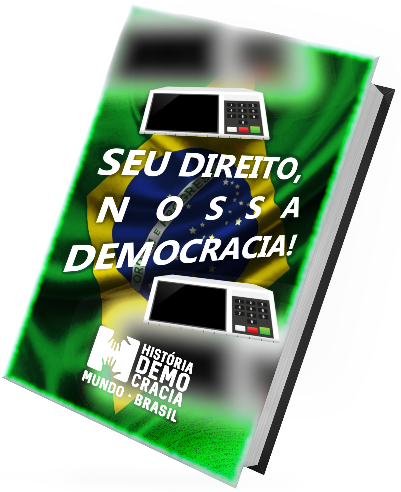

Informações importantes!
Com o voto, o cidadão interfere na escolha dos chefes do executivo e dos parlamentares
Representa uma verdadeira conquista política para o povo brasileiro
Facultativo para analfabetos, maiores de 70 anos e pessoas com idade entre 16 e 18 anos.
Como emitir seu título On-line?
No Brasil, o alistamento e o voto são obrigatórios a partir dos 18 anos e facultativos para jovens de 16 e 17 anos, os maiores de 70 anos e os analfabetos.
No entanto, em qualquer desses casos, para votar nas eleições é necessário tirar o título e estar em dia com as obrigações perante a Justiça Eleitoral.
Acessar o Passo a PassoNosso e-book!

“O maior inimigo do conhecimento não é a ignorância é a ilusão do
conhecimento.”
— Stephen Hawking
Nosso Manifesto, nossa Luta!
A esperança é de promover a importância do voto consciente para jovens e adolescentes, ampliando o nosso movimento com as demais instituições da sociedade brasileira, que constatam na democracia política um valor essencial da vida em compromisso histórico com o Estado Democrático de Direito.
Convidamos a sociedade brasileira à reflexão e à participação cidadã diante de um quadro onde interesses econômicos nacionais e internacionais estão ameaçando as conquistas alcançadas com a Constituição de 1988.
Lutamos pela democracia por meio da educação, história e informação. Compartilhamos conteúdos visando disseminar conhecimento com linguagem acessível e com valor. Nosso compromisso é com o nosso País, nossa luta é pela Democracia!